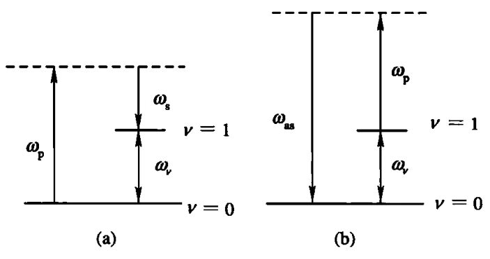
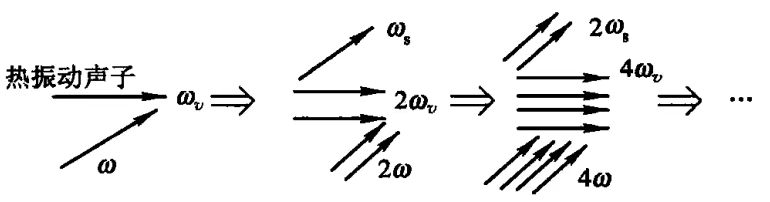

在光散射中，一束频率为\(\omega_p\)的光波通过液态、气态或固态介质时，若其散射光谱中存在相对入射光有一定频移的成分\(\omega_s\)，称为非弹性散射.
弹性散射：光子频率不发生变化的散射.
\(\omega_s\lt \omega_p\)的非弹性散射.
\(\omega_s\gt \omega_p\)的非弹性散射.
非弹性散射的频移量\(\omega_\nu = \omega_p - \omega_s\)往往与介质分子的某些特定转动-振动（或纯转动）能级频率，或晶体介质中晶格振动声子的频率相对应.
转动-振动能级：分子同时具有转动能量和振动能量时，所形成的量子化能级
前者称为Raman散射，后者称为布里渊散射.
通常，Brillouin散射的频移量很小，一般的光谱仪很难探测到，而Raman散射的频移量较大，比较容易探测.
Raman散射中的斯托克斯散射与反斯托克斯散射的能级图如图所示.

分子原来位于基态\(\nu = 0\)上，一个频率为\(\omega_p\)的入射光子被分子吸收，同时发射一个频率为\(\omega_s = \omega_p - \omega_\nu\)的斯托克斯光子，而分子被激发到\(\nu = 1\)的振动能级上.
反斯托克斯散射分子原来位于\(\nu = 1\)的激发态上，一个频率为\(\omega_p\)的入射光子被分子吸收，同时发射一个频率为\(\omega_s = \omega_p + \omega_\nu\)的反斯托克斯光子，而分子回到\(\nu = 0\)的基态能级上.
Raman散射与Brillouin散射的散射效率很低，散射光都是非相干光.
随着高强度激光束的产生，出现了受激Raman散射（SRS）与受激Brillouin散射（SBR）等受激散射现象，这些受激散射都显示出很强的与激光辐射类似的受激特性.
受激散射的基本特性在受激Raman散射中，相干的入射光子主要不是被热振动（光学支）声子所散射，而是被受激（光学支）声子散射.
受激声子的产生过程为：最初一个入射光子与一个热振动声子碰撞，产生一个斯托克斯光子，并增添一个受激声子；当入射光子再与这个增添的受激声子碰撞时，在再产生一个斯托克斯光子的同时，又增添一个受激光子……如此继续下去，便形成一个产生受激声子的雪崩过程，如图所示.

产生声子过程的关键是要有足够多的入射光子.
由于受激声子所形成的声波是相干的，入射激光是相干的，所以产生的斯托克斯光也是相干的.
对于普通的Raman散射过程，须采用量子理论进行讨论；
但对受激Raman散射而言，由于总是满足入射激光光子数\(n_p\)与受激Raman散射光光子数\(n_s\)远大于1，因此可以利用经典电磁场理论进行描述.